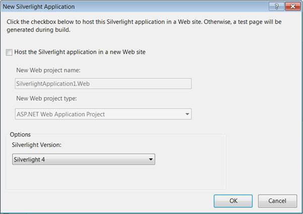
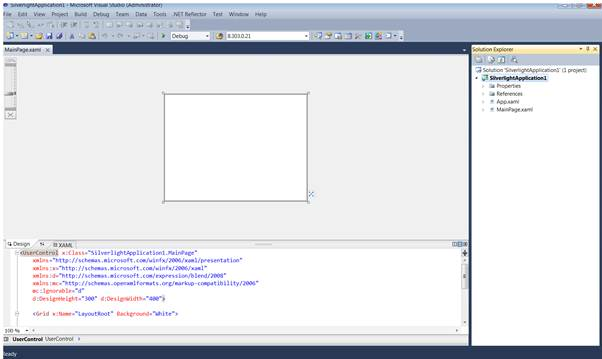

To add a PivotGrid to an application, follow the below steps:
1. Click the Start menu, and then click Microsoft Visual Studio 2010.
2. From the File menu, click New Project. The New Project dialog box will be displayed, as shown below.

Figure 5: New Project Dialog Box
3. Select the Silverlight Application by navigating to the Silverlight node and then click OK.
4. Uncheck Host the Silverlight application in a new Web site in the New Silverlight Application Dialog.

Figure 6: Hosting Silverlight Application in Web
5. Click OK, to create a Silverlight project, as shown below.

Figure 7: New Silverlight Application
6. Drag and Drop the PivotGridControl from the toolbox to the MainPage.xaml.
 Populating Data to
PivotGrid
Populating Data to
PivotGrid